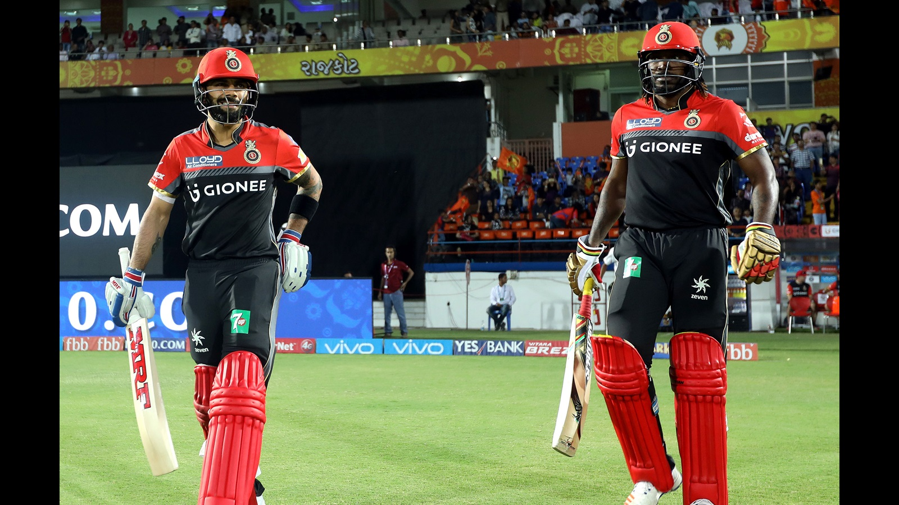

Matches played in each city
Number of times each team scored more than 200
Toss win vs match win
Number of IPL titles won by each team
Season winners
Win percentage
Matches played in each city
IPL is held throughout in India in various cities. Fans are like 12th man of any team, so playing in home ground for any team gives enoromous amount of boost to the players. Due to some inconvinience IPL was held in South Africa in 2009 and in Dubaiin 2014. Maximum number of matches played in each city is sorted and represented.
Number of times each team scored more than 200
IPL has legendary players in each and every team and each one of them try to get a solid score for their team. Scoring 200 was like mirale before the start of IPL and also is initial stages of the IPL.
The team with most number of 200 or more score is none other than the fantasy team RCB, it is the team which is loaded with the best T20 batsmens in the world. The teams having scores more than 200 is filtered and represented.
Toss win vs match win
Winning toss will also influence the confidence of the team. Initial win makes the team bit more confident. Winning is quiet crcuial in some condition, as the condition changes it gets tough. The win and loss percentage is representsed in the pie chart
Number of IPL titles won by each team
Out of the thirteen teams that have played in the Indian Premier League since its inception, one team has won the competition fout times, one team has won the competition thrice, one team has won the competition twice and three other teams have won it once. Mumbai Indians are the most successful team in league's history in terms of the number of titles won. The Chennai Super Kings have won 3 titles, the Kolkata Knight Riders have won two titles, and the other three teams who have won the tournament are the Deccan Chargers, Rajasthan Royals and Sunrisers Hyderabad. The current champions are Mumbai Indians who beat Chennai Super Kings in the final of the 2019 season to secure their fourth title and thus became the most successful team in IPL history ever.
Season winners
How much ever strong every team might be,but at the end of the tournament the champions title is reserved only for one team. They win the IPL trophy of that year. The teams with maximum number of tropies are sorted and represented.
Win percentage
In IPL,win percentage refers to ratio of total number of matches won by each team to the total number of matches won by each team.